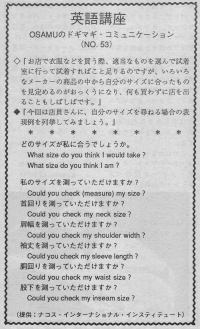

私のサイズを測って頂けますか。
Osamu went shopping with his wife. When they found clothes they tried it on but it was difficult to find the perfect size in each brand. A lot of times, they would go out not buying anything. Osamu didn't know how to ask about his size. Nowadays, most department stores don't have measuring devices. They just might measure you with their eyes and their own judgment. If you go to a high class store where they do alterations, they will measure you and tell you your measurements. If the saleperson seems friendly, you can ask her opinion: "What size do you think I am? or What size do you think I should try on?"
お店で衣服などを買う際、適当なものを選んで試着室に行って試着すればこと足りるのですが、いろいろなメーカーの商品の中から自分のサイズに合ったものを見定めるのが億劫になり、何も買わずに店を出ることもしばしばです。今回は店員さんに、自分のサイズを尋ねる場合の表現例を列挙してみましょう。
どのサイズが私に合うでしょうか。
What size do you think I would take?
What size do you think I am?
私のサイズを測っていただけますか？
Could you check (measure) my size?
首回りを測って頂けますか？
Could you check my neck size?
肩幅を測って頂けますか？
Could you check my shoulder width?
袖丈を測って頂けますか？
Could you check my sleeve length?
胴回りを測って頂けますか？
Could you check my waist size?
股下を測って頂けますか？
Could you check my inseam size?

| © 1995-2013 NACOS International Institute. All Rights Reserved. |